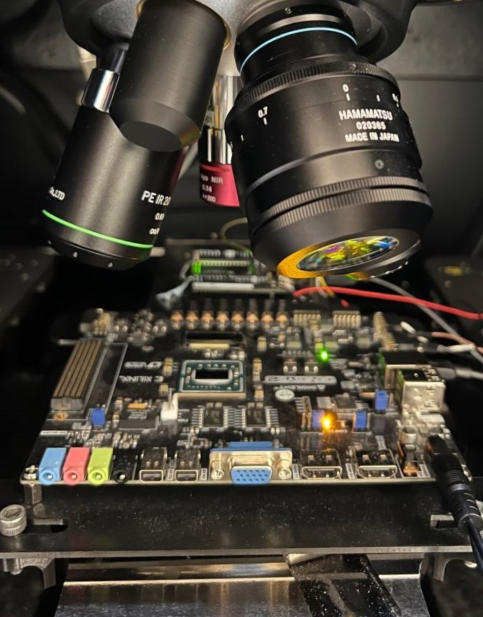
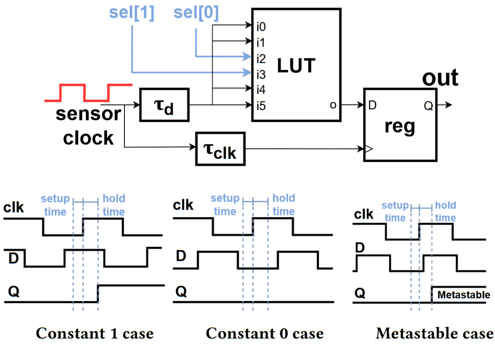
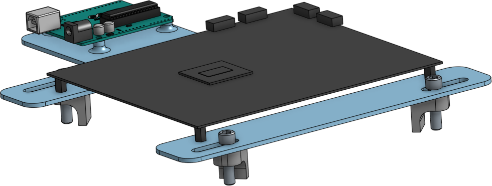

View the source code for my sensor here

Hol up what are you even saying
Laser Voltage Probing (LVP) is a novel and powerful technique for IC failure analysis. Essentially you shoot a laser at a chip, and the reflection is modulated based on activity on the chip. Based on this modulation, you can do one of two things…
- filter based on frequency to make a heatmap of signals of a certain frequency
- average many (thousands or millions) reflections to “probe” a signal at a point
The laser is different from laser fault injection in that it uses a longer wavelength that doesn’t induce photocurrents. As well as this works for failure analysis, it has also proven to be just as powerful in reverse engineering and extracting cryptographic keys. This paper proposes a method to detect these lasers and then do some evasive maneuvers.
Just as I was wrapping up that project, WPI purchased a Hamamatsu PHEMOS-X equipped with a 1300nm laser and InGaAs camera for photon emission to observe chips with a 5x, 20x, 50x, and 71x lens. I learned to use this machine for this project and future ones. Each of those lenses, so I’m told, is worth more than my car, and the whole machine is probably worth more than me (somewhere in the low 7 figures). So uhhhh I better not break anything…
The 1LUTSensor
My part of the paper was primarily the sensor part. It is based on the 1LUTSensor, which was designed to sense slight power fluctuations indirectly by measuring the delay of a lookup table.

Essentially, a clock signal one goes to the clock input of a register, and the other goes through a lookup table and then to the data input of the register. On both paths, there is a configurable delay line, which is process, voltage, and temperature invariant, and we set these delays such that the output is metastable. That is, the rising edge of the data input is close enough to the rising edge of the clock input such that the setup and hold times are violated, and thus the register cannot reliably sample the data input. When this happens, the output randomly flips between 1 and 0, and the distribution of 1s and 0s depends on whether it is closer to the boundary of the setup time (constant 1 case) or hold time (constant zero case).
The original implementation of this was used for power analysis attacks, particularly for cloud FPGA services where multiple users deploy their designs in parallel on the same FPGA. The basic idea is…
- increased power heats up device
- increased heat increases the delay in LUTs
- increased delay in LUTs increases zeros
The idea is that since the LVP laser locally heats up the FPGA, the same principles apply. The key difference in my LVP detection implementation is that I run the clock much slower (10MHz vs 600MHz), since while they were observing power fluctuations in a circuit running at speeds on the order of 10MHz, I was detecting laser pulses on the order of 1ms.
To detect the laser, I used a simple scheme of checking if the number of zeros in a 256 clock cycles (limited by the interface I used to read this count). It’s not perfect, and is susceptible to false positives. Lately, I’ve been attempting to go down the rabbit hole of statistical analysis and signal processing to figure out a better way to detect it.
Experimental shenanigans
An interesting design problem was how to control the experiment. In my laser fault injection project, there wasn’t much to control - an XOR gate, a register, a simple finite state machine, and thus I had the I/Os connected directly to PMOD headers, which I can read or write through the Arduino digital I/O. However, with this I had tons of knobs to turn and things to read: delay values to tune for metastability, counter values, detection thresholds, detection schemes, target circuits in the immediate area, etc.
Originally my experiments were simple enough that all the information I needed to read and write could fit into 8 bits, so I used SPI as it was easiest to implement. However this quickly stopped being the case as I added more modules and needed to do more. SPI is only as addressible and expandable as your ability to add wires for the CS signal, which means it is neither of those things, lest [insert Italian food joke here].
Thus I quickly pivoted to an I2C interface, since every module could have its own address. This meant not only did I no longer need to cram the “where” and the “what” into the same byte, but also I could easily add more modules by assigning another address.

I used the same 3.3V modified Arduino Uno that I used in my laser fault injection project, and I designed and 3D printed a simple fixture in SolidWorks designed to hold the FPGA board and the Arduino to quickly and easily take it out of the PHEMOS. I lost access to that model due to licensing issues, and I designed an identical model in OnShape for the sake of open sourcing as much of the project as possible.
The professional looking presentation video
For the purposes of our presentation at ICCAD and a cool thing for my advisor to show off whenever it is relevant, my colleague and I made a proof of concept video, where my sensor detects the laser, and it triggers my colleague’s evasive maneuvers. (In practice the circuit would move far, far away but this is merely a demonstration).
The YouTube video
I decided to make a YouTube video as well. The spiritual successor to the laser fault injection video if you will, and it has to be one of the most chaotic videos I ever made for my channel.